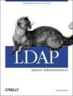
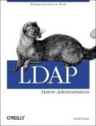

Projects related to FreeRADIUS
This page lists a number of projects and products related to FreeRADIUS that may be useful to system administrators. For more up to date information, please see the Wiki.
Reference Books and Articles
 
O'Reilly has produced two books
that mention FreeRADIUS. The first is the official RADIUS
book, and the second is the LDAP
System Administration book. The RADIUS book covers a fair amount
of material, and is recommended to anyone new to the RADIUS protocol.
The LDAP book has a chapter on configuring FreeRADIUS to work with
LDAP, and is recommended anyone using that configuration.

O'Reilly has produced two books
that mention FreeRADIUS. The first is the official RADIUS
book, and the second is the LDAP
System Administration book. The RADIUS book covers a fair amount
of material, and is recommended to anyone new to the RADIUS protocol.
The LDAP book has a chapter on configuring FreeRADIUS to work with
LDAP, and is recommended anyone using that configuration.
Everyone using RADIUS should probably also read the Papers and Security Briefs on the RADIUS Protocol. Those papers cover technical matters related to RADIUS security, and also describe some best practices for RADIUS security.
RADIUS Clients and Servers
- pam_radius
- A PAM module to authenticate local users to a RADIUS server.
- mod_auth_radius
- An Apache module that authenticates users to a RADIUS server.
- Open Source RADIUS Servers
- A number of RADIUS servers have been made available over the years. This page lists the ones we know about.